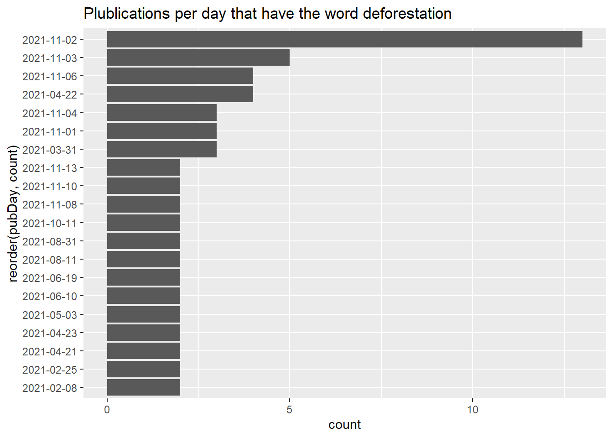
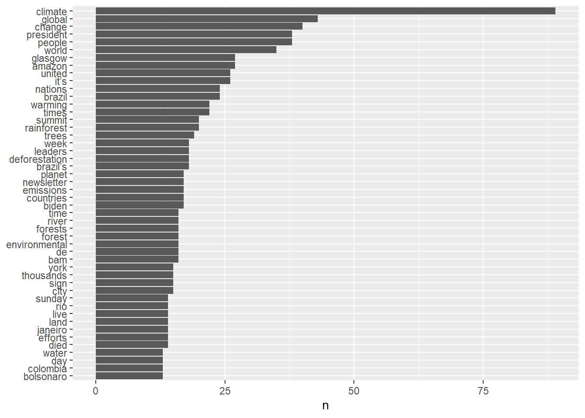
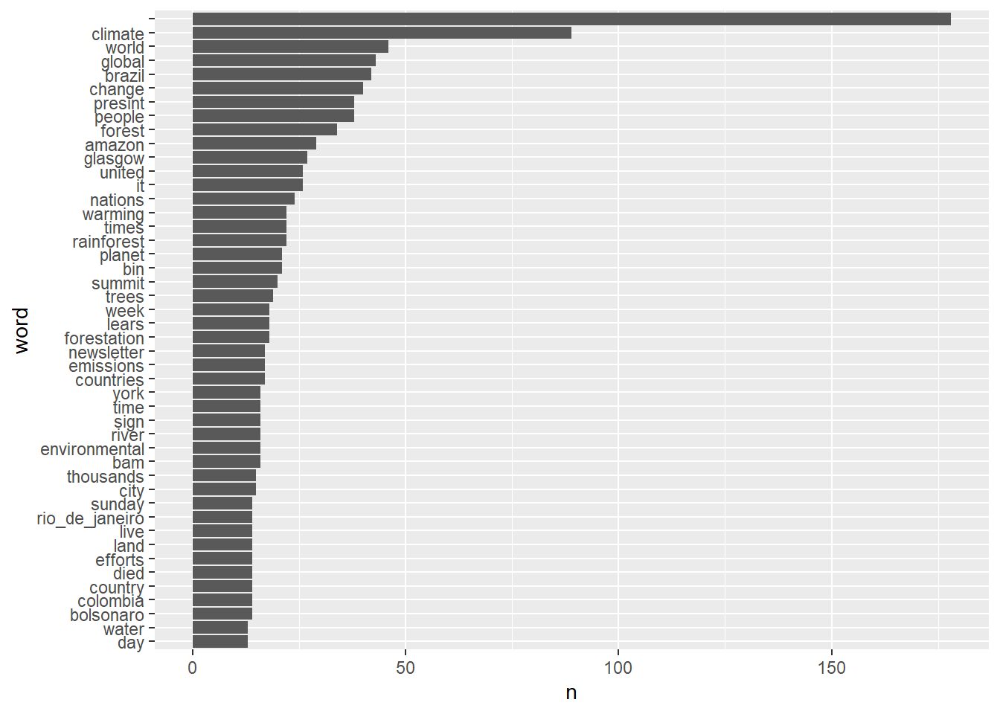
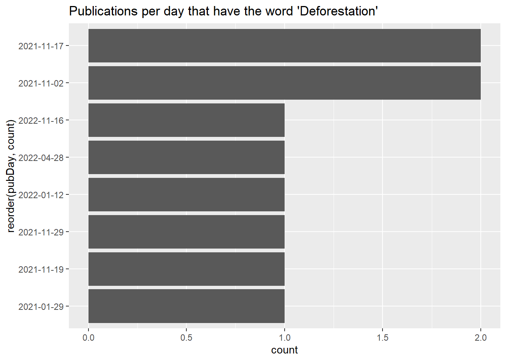
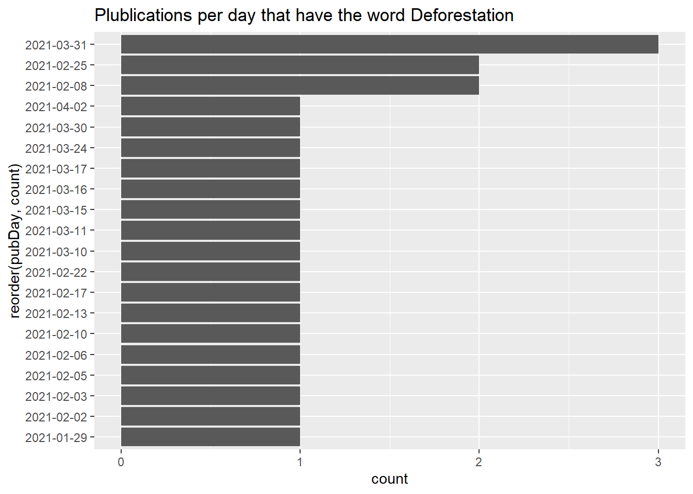

# t <- fromJSON("http://api.nytimes.com/svc/search/v2/articlesearch.json?q=haaland&api-key=",API_KEY,flatten = TRUE)
#create the query url
url <- paste("http://api.nytimes.com/svc/search/v2/articlesearch.json?q=deforestation&api-key=",API_KEY, sep ="")
#send the request, receive the response, and flatten
t <- fromJSON(url, flatten = T)Lab 1 : NYT API
Create a free New York Times account (https://developer.nytimes.com/get-started)
Pick an interesting environmental key word(s) and use the {jsonlite} package to query the API. Pick something high profile enough and over a large enough time frame that your query yields enough articles for an interesting examination.
#what type of object is t?
class(t)
#make a dataframe to be easy to use
t <- data.frame(t)
# how big is it?
dim(t)
# what variables are we working with? we donot have accest to the full text, are more by parts.
names(t)Setting parameters
term1 <- "deforestation"
begin_date <- "20210120"
end_date <- "20230410"
# Construct the query url using API operators
baseurl <- paste0("http://api.nytimes.com/svc/search/v2/articlesearch.json?q=",term1,"&begin_date=",begin_date,"&end_date=",end_date,"&facet_filter=true&api-key=","GDvcSNRdr6yjqI1POqkAF4Zw46bZAHtW", sep="")
#check the query url
baseurl[1] "http://api.nytimes.com/svc/search/v2/articlesearch.json?q=deforestation&begin_date=20210120&end_date=20230410&facet_filter=true&api-key=GDvcSNRdr6yjqI1POqkAF4Zw46bZAHtW"#dig into the JSON object to find the totals hits
initialQuery <- fromJSON(baseurl)
maxPages <- round((initialQuery$response$meta$hits[1]/10)-1)
pages <- list()
#loop, you can do 5 request per minute
for(i in 0:maxPages){
nytSearch <- fromJSON(paste0(baseurl, "&page=", i), flatten = TRUE) %>%
data.frame()
message("Retrieving page ", i)
pages[[i+1]] <- nytSearch
Sys.sleep(20)
}Retrieving page 0Retrieving page 1Retrieving page 2Retrieving page 3Retrieving page 4Retrieving page 5Retrieving page 6Retrieving page 7Retrieving page 8Retrieving page 9Retrieving page 10Retrieving page 11Retrieving page 12Retrieving page 13Retrieving page 14Retrieving page 15Retrieving page 16Retrieving page 17Retrieving page 18Retrieving page 19Retrieving page 20Retrieving page 21Retrieving page 22Retrieving page 23Retrieving page 24Retrieving page 25Retrieving page 26Retrieving page 27Retrieving page 28Retrieving page 29Retrieving page 30Retrieving page 31Retrieving page 32Retrieving page 33Retrieving page 34Retrieving page 35- Recreate the publications per day and word frequency plots using the first paragraph. This time filter on the response.docs.news_desk variable to winnow out irrelevant results.
- Convert JSON object into a data frame
#converted each returned JSON object into a data frame
class(nytSearch)[1] "data.frame"class(pages)[1] "list"#needs bing the pages an dcreat a title from nytData creo el archivo para compartir
nyt_df <- do.call("rbind", pages)
saveRDS(nyt_df, "nyt_def.rds")
#load the nyt_def data
nytDat <- readRDS("data/nyt_def.rds")
dim(nytDat)[1] 360 33news_desk <- pages[[1]][["response.docs.news_desk"]]#make the publications per day and word frequency plots
date_plot <- nytDat %>%
mutate(pubDay=gsub("T.*","",response.docs.pub_date)) |>
group_by(pubDay) |>
summarise(count=n()) |>
filter(count >= 2) |>
head(20) |>
ggplot() +
geom_bar(aes(x=reorder(pubDay, count), y=count), stat="identity") +
coord_flip()+
labs(title = "Plublications per day that have the word deforestation")
date_plot
paragraph <- names(nytDat)[6]
#tokenized data
tokenized <- nytDat|>
unnest_tokens(word, paragraph) tokenized <- tokenized|>
anti_join(stop_words)Joining with `by = join_by(word)`tokenized|>
count(word, sort = TRUE)|>
filter(n >12)|>
mutate(word = reorder(word, n))|>
ggplot(aes(n, word))+
geom_col()+
labs(y = NULL)
- Make some (at least 3) transformations to the corpus (add context-specific stopword(s), stem a key term and its variants, remove numbers)
# Clean the tokenized words
clean_tokens <- str_remove_all(tokenized$word, "[:digit:]" )
clean_tokens <- gsub("’s", "", clean_tokens)
clean_tokens <- str_replace_all(clean_tokens, "forests" , "forest" )
clean_tokens <- str_replace_all(clean_tokens, "forestss" , "forest" )
clean_tokens <- str_remove_all(clean_tokens, "de")
clean_tokens <- str_remove_all(clean_tokens, "janeiro")
clean_tokens <- str_replace_all(clean_tokens, "rio", "rio_de_janeiro")
# Create a data frame from the cleaned tokens and count the words
clean_tokens %>%
as.data.frame() %>%
rename(word = ".") %>%
count(word, sort = TRUE) %>%
filter(n > 12) %>%
mutate(word = reorder(word, n))%>%
ggplot( aes(n, word)) +
geom_col() 
- Recreate the publications per day and word frequency plots using the headlines variable (response.docs.headline.main). Compare the distributions of word frequencies between the first paragraph and headlines. Do you see any difference?
# Extract publication date and headline from NYT data
headlines <- nytDat %>%
select(response.docs.pub_date, response.docs.headline.main) %>%
filter(str_detect(response.docs.headline.main, "Deforestation"))
# Create plot of publications per day
date_plot <- headlines %>%
mutate(pubDay = gsub("T.*","",response.docs.pub_date)) %>%
group_by(pubDay) %>%
summarise(count = n()) %>%
filter(count >= 1) %>%
head(20) %>%
ggplot() +
geom_bar(aes(x = reorder(pubDay, count), y = count), stat = "identity") +
coord_flip() +
labs(title = "Publications per day that have the word 'Deforestation'")
date_plot
#make the publications per day and word frequency plots
date_plot <- nytDat%>%
mutate(pubDay=gsub("T.*","",response.docs.pub_date)) |>
group_by(pubDay) |>
summarise(count=n()) |>
filter(count >= 1) |>
head(20) |>
ggplot() +
geom_bar(aes(x=reorder(pubDay, count), y=count), stat="identity") +
coord_flip()+
labs(title = "Plublications per day that have the word Deforestation")
date_plot
Compare the distributions of word frequencies between the first paragraph and headlines. Do you see any difference? Response: Yes, there are differences in the distributions of frequencies of the word “deforestation” between the first paragraph and headlines. The frequency of “deforestation” is be higher in the first paragraph compared to the headlines. This could be due to the fact that headlines are often limited in length and therefore may not include all of the key details of the article. Additionally, headlines are typically crafted to grab the reader’s attention and may not necessarily reflect the full scope of the article’s content